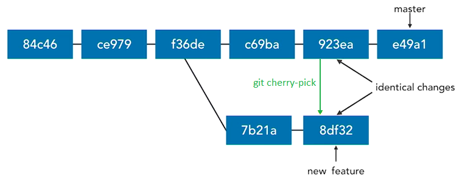
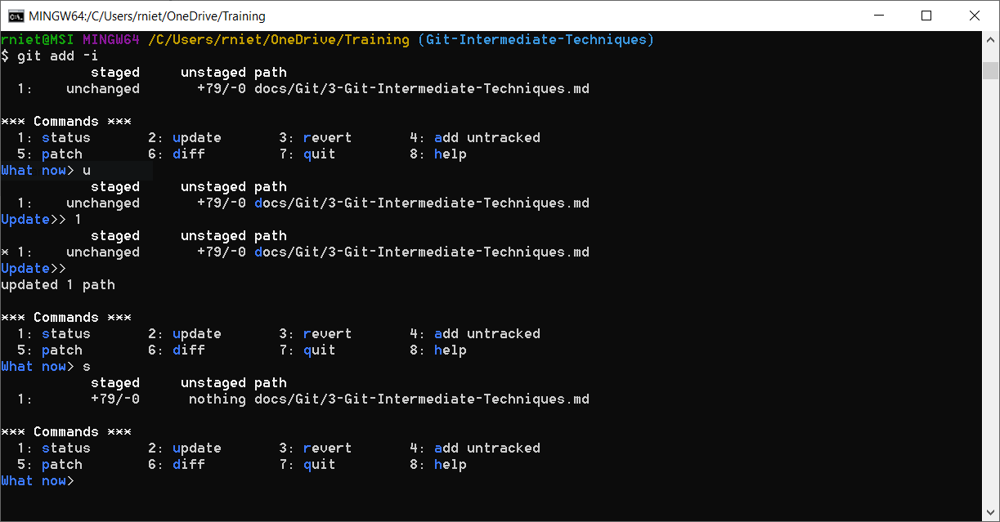
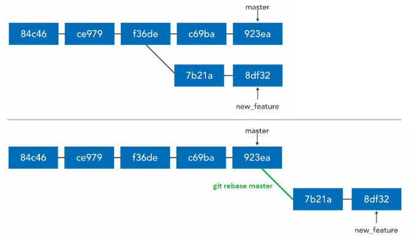
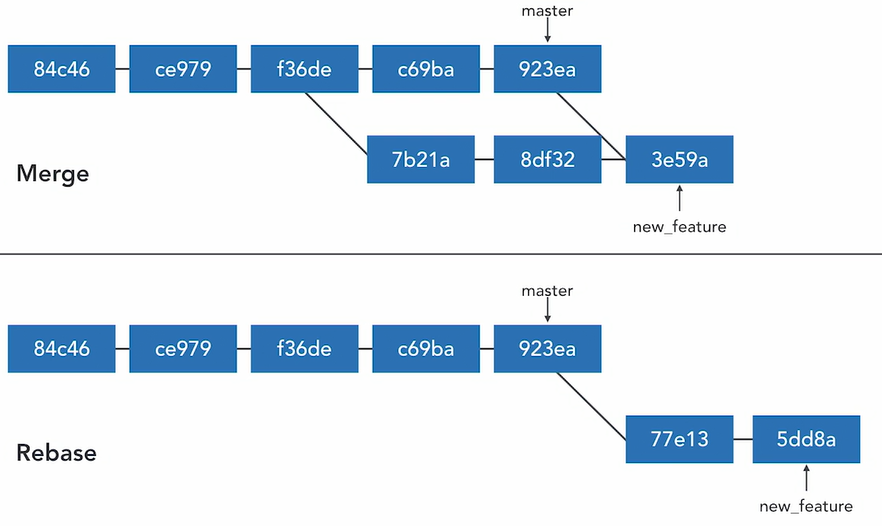
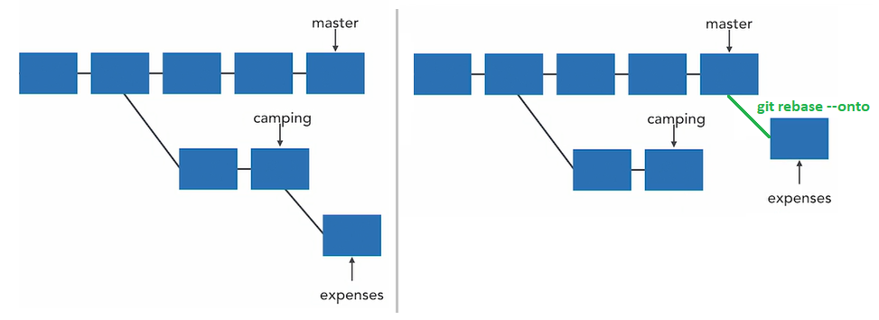

Git Intermediate Techniques¶
Prune¶
Delete remote-tracking branches
git remote prune origin --dry-run
git remote prune origin
git fetch --prune
git fetch -p
Prune all unreachable objects. Do not need to use
git prune
Tags¶
Reference names to a commit (v1.0, v1.1, v2.0):
-
Lightweight tag
git tag tag_name commit_id -
Annotated tag (most common)
git tag -a v1.1 -m "Version 1.0" commitId git tag -am "Version 1.0" v1.1 commitId
List tags
git tag
git tag --list
git tag -l
git tag -l "v1*"
git tag -l -n
Work with tags
git show v1.1
git diff v1.0..v1.1
Delete a tag
git tag --delete v1.1
git tag -d v1.1
Push tags to remote server
git push origin v1.1
git push origin --tags
Delete remote tags
git push origin :v1.1
git push --delete origin v1.1
git push -d origin v1.1
Check out tags
git checkout -b new_branch v1.1
Cherry-pick¶
- copy a single commit or a range of commits
- paste in the branch (new commits have different SHAs).

git cherry-pick SHA
git cherry-pick SHA --edit "edit commit message"
git cherry-pick SHA -e "edit commit message"
git cherry-pick SHA..SHA
when there are conflicts:
git cherry-pick --continue
git cherry-pick --abort
Stage changes interactively¶
Interactive way to stage changes from the working directory to the staging area:
git add --interactive
git add -i

Hunk¶
Hunk is an area where two files differ. It can be staged, skipped or split.
In interactive mode, select option 5 (Patch) and use the wizard with options e (edit), s (split), y (yes) and n (not) to patch portions of codes.
Patch mode is not only for interactive mode:
git add --patch
git add -p
Patch parameter is also used in other commands:
git stash -p
git reset -p
git checkout -p
git commit -p
Patches¶
Diff Patches¶
git diff from-commit to-commit > output.diff
Apply difference to our working directory
git apply output.diff
Formatted Patches¶
Export each commit in Unix mailbox format, for example:
-
export all commits in a range (optional to a file)
git format-patch from-commit..to-commit git format-patch from-commit..to-commit --stdout > feature.patch -
export a single commit
git format-patch -1 commitId -
export all commits on current branch, which are not in master branch (optional to a directory)
git format-patch master git format-patch master -o output_directory
Apply formatted patches (apply mailbox):
git am path/file.patch
git am path/*.patch
Rebase¶
Usefull to clean commits and keep the history cleaner.
Copy commits from one branch, one-by-one, and then replaying/incorporating them at the end of another branch (commits are moved).

git rebase master
git rebase master new_feature
Get the commitID where branch diverges (the latest commit in common)
git merge-base master new_feature
Merge VS rebase¶

- Merge and Rebase have similar ends: they incorporate changes from one branch into another branch
- Use
mergeto bring large branches back into master - Use
rebaseto add minor commits in master to a branch
Rebasing should be only used on your local, private branches or on branches that you use exclusively; not branches that others are using.
Rebase is destructive when there are conflicts. Conflicts will be resolved with new changes in commits, and then:
git rebase --continue
git rebase --skip
git rebase --abort
Rebase onto other branches¶
git rebase --onto base upstream branch
For example:
git rebase --onto master camping expenses

Undo rebase¶
Undoing complex rebases may loses SHAs, commit messages, change sets, etc.
git reset --hard ORIG_HEAD
git rebase --onto camping_commitID master expenses
Interactive rebase¶
git rebase -i master new_feature
git rebase -i HEAD~3
with options:
pick: use commitdrop: remove commitreword: use commit, but edit the commit messageedit: use commit, but stop for amendingsquash: use commit, but meld into previous commitfixup: likesquash, but discard this commit's log messageexec:
Pull rebase¶
Fetch from remote, and then rebase instead or merge
git pull --rebase
git pull -r
git pull --rebase=preserve
git pull --rebase=interactive
Track Problems¶
Blame¶
How wrote this code and when? - who I should blame?
git blame filename.txt
git blame -w filename.txt
git blame -L 100,150 filename.txt
git blame -L 100,+50 filename.txt
git blame SHA filename.txt
where -w ignore whitespace
Add a global alias for blame as praise
git config --global alias.praise blame
Annotate¶
Similar to blame, with different output format
git annotate filename.txt
Bisect¶
Find the commit that introduced a bug or regression. The last good revision and the first bad revision are marked
git bisect start
git bisect bad <treeish>
git bisect good <treeish>
git bisect reset